В 80-х годах до изобретения в Советском Союзе вражеского чупа-чупса практически в каждой семьей были формы для изготовления леденцов дома.
В основном формы были такие.
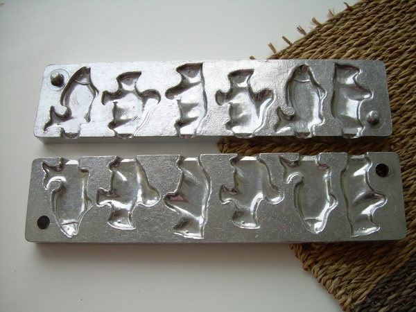
Чтобы приготовить в них леденцы не требовались ни красители ни загустители. Достаточно было растопить на плитке в железной кружке сахар, и залить его в смазанные подсолнечным маслом формы. Как только леденец начинал твердеть, в него полагалось вставить палочку. Около магазинов леденцы или как их еще называли «петушки» иногда продавали бабушки.
Пока родителей не было дома, можно было еще поэкспериментировать, залив в форму сладкую (очень сладкую воду), но все заканчивалось уляпанным в сахаре столом.
Я недавно пробовал найти такие формы для леденцов в магазине, но видимо алюминий стал дорог — форм в магазинах нет. Говорят, что есть еще какие-то силиконовые, но мне не попадались и такие.
А вот итальянский фотограф Massimo Gammacurta не заморачивался с походами по магазинам и сделал вот такие вот брендированные леденцы.
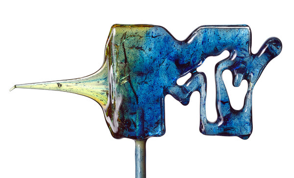
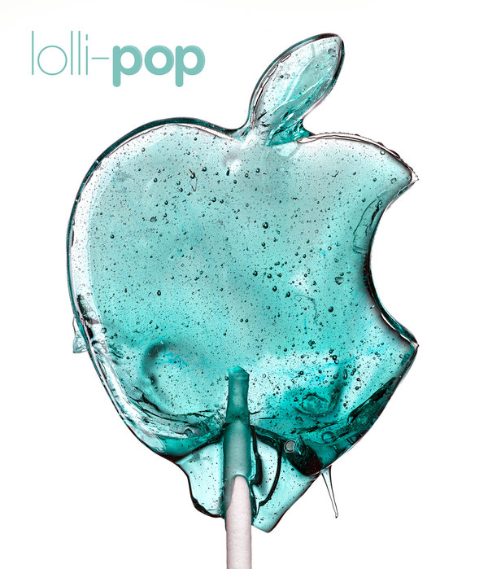
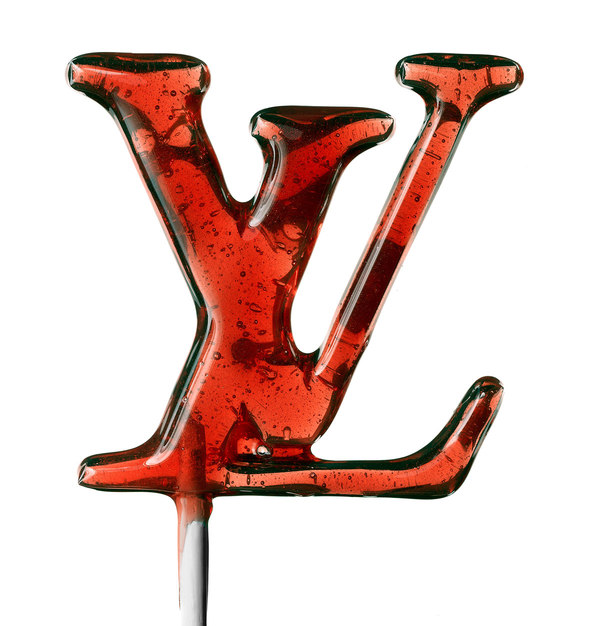
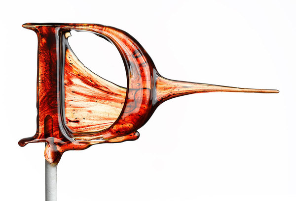
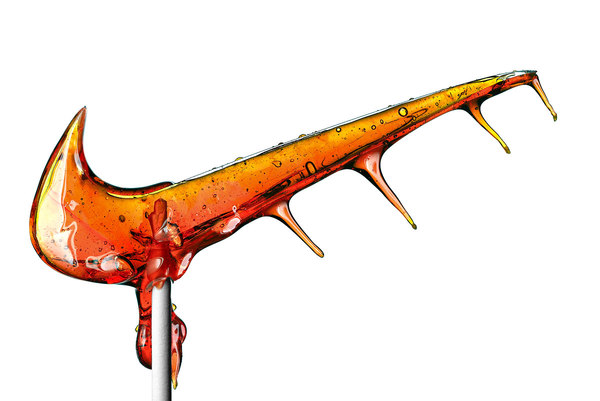
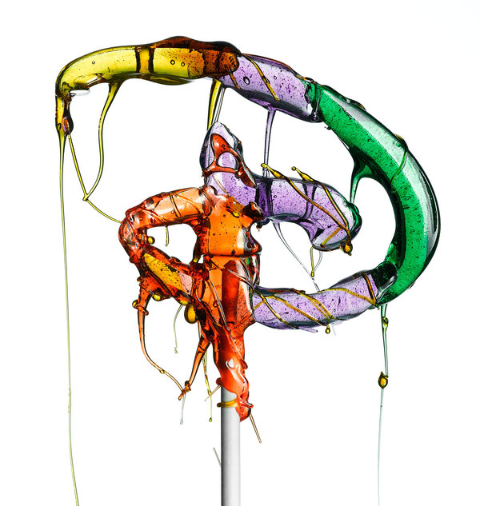
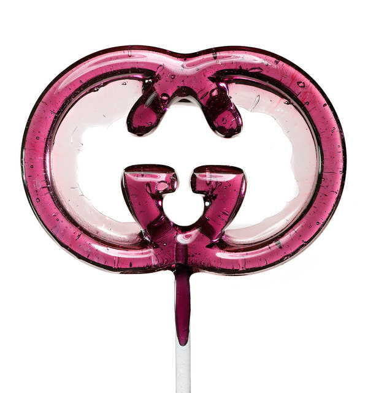
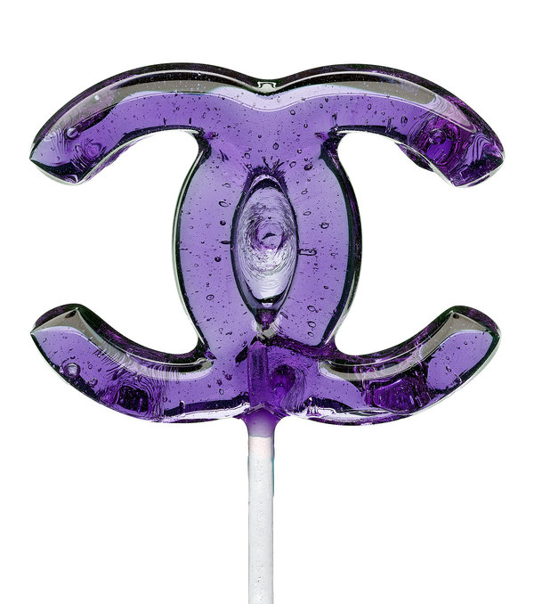
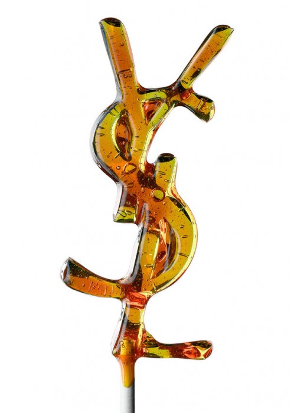
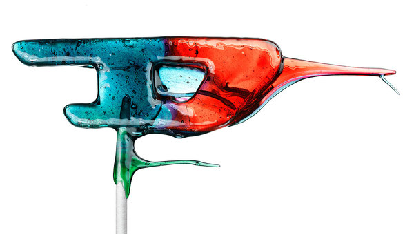
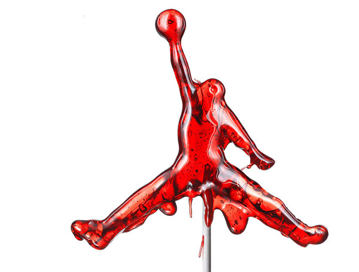
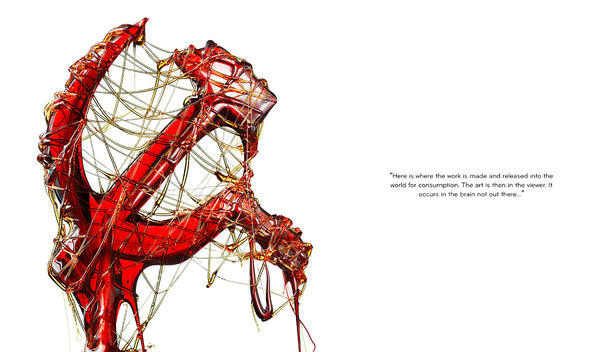